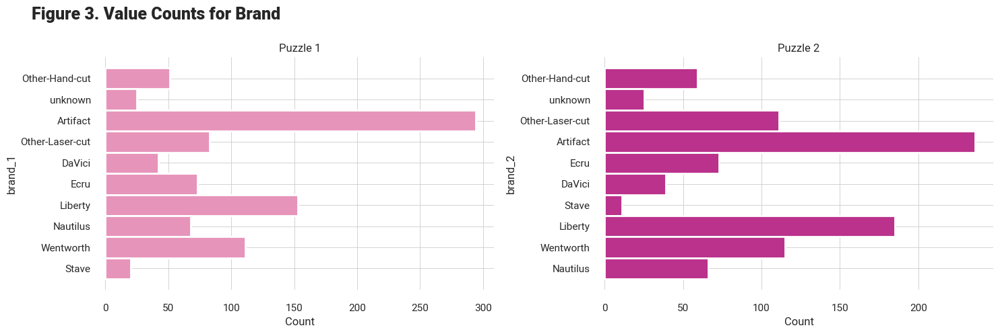

2. Data Cleaning
Contents
2. Data Cleaning#
2.1 Members Data#
member_holdtime_df=pd.read_csv('data/member_holdtime_df.csv')
member_holdtime_df.isnull().sum()
memberID 0
holdtime 0
puzzlepack 0
dtype: int64
# removing outliers
member_holdtime_df = member_holdtime_df[(member_holdtime_df['holdtime'] >= 0.1) &
(member_holdtime_df['holdtime'] <= 150)]
2.2 Packs Data#
packs_df=pd.read_csv('data/packs_df.csv')
packs_df.head()
| pack_name | brand | piece_count | difficulty_rating | piece_count_1 | piece_count_2 | difficulty_rating_1 | difficulty_rating_2 | |
|---|---|---|---|---|---|---|---|---|
| 0 | Anne Belle Thompson The Mikado Anne Belle Thom... | Other-Hand-cut | 387,242 | A-Easy,A-Easy | 387.0 | 242.0 | A-Easy | A-Easy |
| 1 | Anthology Puzzles Alphonse Mucha La Plume Anth... | NaN | 320,160 | Average,Average | 320.0 | 160.0 | Average | Average |
| 2 | Anthology Puzzles Colorful Cat Anthology Puzzl... | NaN | 150,170 | Really-Hard,A-Easy | 150.0 | 170.0 | Really-Hard | A-Easy |
| 3 | Anthology Puzzles Framed American Gothic Antho... | NaN | 320,300 | Average,Average | 320.0 | 300.0 | Average | Average |
| 4 | Anthology Puzzles Over The Moon Anthology Puzz... | NaN | 278,177 | Average,A-Easy | 278.0 | 177.0 | Average | A-Easy |
# splitting brand name
packs_df['brand_2'] = packs_df['brand'].str.split(',', expand=True)[1]
packs_df['brand_1'] = packs_df['brand'].str.split(',', expand=True)[0]
# adding number of puzzles feature
packs_df['num_puzzles'] = packs_df['pack_name'].map(lambda n: 1 if (n[-1] == ' ') else 2, na_action='ignore')
# fixing datatype
packs_df = packs_df.astype({'piece_count_1': 'int64', 'piece_count_2': 'int64'}, errors='ignore')
# dropping the initial variables
packs_df.drop(['brand', 'piece_count', 'difficulty_rating'], axis=1, inplace=True)
packs_df.isnull().sum()
pack_name 0
piece_count_1 8
piece_count_2 181
difficulty_rating_1 4
difficulty_rating_2 4
brand_2 775
brand_1 25
num_puzzles 0
dtype: int64
# making the brand_2 same as brand_1
# ------ must be done only for puzzle = 2, right?
packs_df.loc[(packs_df['brand_2'].isna()), 'brand_2'] = packs_df['brand_1']
packs_df[['brand_1', 'brand_2']] = packs_df[['brand_1', 'brand_2']].fillna('unknown')

# Some 1 puzzle packs have a second number for pieces, this seems to be legit, updating to be 2 puzzle packs
packs_df.loc[((packs_df.num_puzzles == 1) & (packs_df.piece_count_2.notna())), 'num_puzzles'] = 2
packs_df.piece_count_1 = packs_df.piece_count_1.astype('float').astype('Int64')
packs_df.piece_count_2 = packs_df.piece_count_2.astype('float').astype('Int64')
avg_pc1 = packs_df['piece_count_1'].median()
avg_pc2 = packs_df['piece_count_2'].median()
# puzzles which have no value for piece_1 is replaced with avg values
packs_df['piece_count_1'].fillna(avg_pc1, inplace=True)
# if 2 puzzles and second piececount is not available, replace with average
packs_df.loc[((packs_df['piece_count_2'].isna() ) &(packs_df['num_puzzles'] ==2)), 'piece_count_2'] = int(avg_pc2)
# puzzles with no second piece_count, make second piece count 0
# (because num_puzzle = 2 was dealt with earlier)
packs_df.loc[(packs_df['piece_count_2'].isna()) & (packs_df['num_puzzles'] ==1), 'piece_count_2'] = int(0)
packs_df.isnull().sum()
pack_name 0
piece_count_1 0
piece_count_2 0
difficulty_rating_1 4
difficulty_rating_2 4
brand_2 0
brand_1 0
num_puzzles 0
dtype: int64
packs_df['difficulty_rating_1'].fillna('Average', inplace=True)
packs_df['difficulty_rating_2'].fillna('Average', inplace=True)
2.3 Merged data#
df = member_holdtime_df.merge(packs_df, left_on='puzzlepack', right_on='pack_name', how='left')
df.head(2)
| memberID | holdtime | puzzlepack | pack_name | piece_count_1 | piece_count_2 | difficulty_rating_1 | difficulty_rating_2 | brand_2 | brand_1 | num_puzzles | |
|---|---|---|---|---|---|---|---|---|---|---|---|
| 0 | member1 | 2.939411 | Artifact Puzzles Justin Hillgrove Word Travels... | Artifact Puzzles Justin Hillgrove Word Travels... | 456 | 548 | A-Easy | Average | Artifact | Artifact | 2.0 |
| 1 | member1 | 0.998885 | DaVici Puzzles Full Moon Feast DaVici Puzzles ... | DaVici Puzzles Full Moon Feast DaVici Puzzles ... | 195 | 220 | A-Easy | Hard | DaVici | DaVici | 2.0 |
df.shape, member_holdtime_df.shape
((19387, 11), (19387, 3))
member_holdtime_df.puzzlepack.nunique(), packs_df.pack_name.nunique(),
(968, 920)
df.isnull().sum()
# about 5% of the data is missing
memberID 0
holdtime 0
puzzlepack 0
pack_name 1085
piece_count_1 1085
piece_count_2 1085
difficulty_rating_1 1085
difficulty_rating_2 1085
brand_2 1085
brand_1 1085
num_puzzles 1085
dtype: int64
Tip: # Ideally we should have information about all the packs. Since we do not have this information and it is recommended that we do not drop these rows, we will impute these with the average values.
2.4 Dealing with Nulls!#
Methodology
num_puzzles \(\longrightarrow\) Count number of times ‘Puzzle’ appears in puzzlepack
brand_1, brand_2 \(\longrightarrow\) Take word before ‘Puzzle’ as brand name
difficulty_rating \(\longrightarrow\) Take average at brand level from known data
piece_count \(\longrightarrow\) Take average at brand level from known data
missing_pack_data = df.loc[df['pack_name'].isna()][['puzzlepack', 'piece_count_1', 'piece_count_2',
'difficulty_rating_1', 'difficulty_rating_2', 'brand_1',
'brand_2', 'num_puzzles']]
missing_pack_data.reset_index(drop=True, inplace=True)
# getting number of puzzles
missing_pack_data['num_puzzles'] = missing_pack_data['puzzlepack'].apply(lambda x: (x.count('Puzzles')))
# packs can have only 1 or two puzzles
for i in range(len(missing_pack_data)):
if missing_pack_data['num_puzzles'][i] < 1:
missing_pack_data['num_puzzles'][i] = 1
elif missing_pack_data['num_puzzles'][i] > 2:
missing_pack_data['num_puzzles'][i] = 2
## to limit the number of brand names we will only use the brands that we know
known_brands = list(set(packs_df['brand_1'].unique()).union(set(packs_df['brand_2'].unique())))
# getting brand_1
for i in range(len(missing_pack_data)):
words = missing_pack_data['puzzlepack'][i].split()[:2]
if 'Puzzles' in words[1:]: # if its the second or third word
if words[words.index('Puzzles')-1] in (known_brands):
missing_pack_data['brand_1'][i] = words[words.index('Puzzles')-1]
else:
missing_pack_data['brand_1'][i] = 'unknown'
# getting brand_2
for i in range(len(missing_pack_data)):
words = missing_pack_data['puzzlepack'][i].split()[2:]
if 'Puzzles' in words[1:]: # if its the 4th word onwards
if words[words.index('Puzzles')-1] in (known_brands):
missing_pack_data['brand_2'][i] = words[words.index('Puzzles')-1]
else:
missing_pack_data['brand_2'][i] = 'unknown'
missing_pack_data[['num_puzzles', 'brand_1', 'brand_2']].isnull().sum()
num_puzzles 0
brand_1 139
brand_2 333
dtype: int64
# if anything still missing in num_puzzles, brands
missing_pack_data['num_puzzles'].fillna(1, inplace=True)
missing_pack_data['brand_1'].fillna('unknown', inplace=True)
missing_pack_data['brand_2'].fillna('unknown', inplace=True)
# brand level average piece count values -- KNOWN data
groupby_brand_pieces_1 = packs_df.groupby("brand_1")["piece_count_1"].mean()
groupby_brand_pieces_2 = packs_df.groupby("brand_2")["piece_count_2"].mean()
# getting piece_count_1
for i in range(0, len(missing_pack_data)):
try:
missing_pack_data['piece_count_1'][i] = int(groupby_brand_pieces_1[missing_pack_data['brand_1'][i]])
# getting piece_count_2 if needed
if missing_pack_data['num_puzzles'][i] == 1:
missing_pack_data['piece_count_2'][i] = 0
else:
missing_pack_data['piece_count_2'][i] = int(groupby_brand_pieces_2[missing_pack_data['brand_2'][i]])
except Exception as e:
pass
# print(e)
# brand level most common difficulty values -- KNOWN data
groupby_brand_diff_1 = packs_df.groupby("brand_1")["difficulty_rating_1"].agg(pd.Series.mode)
groupby_brand_diff_2 = packs_df.groupby("brand_2")["difficulty_rating_2"].agg(pd.Series.mode)
# getting difficulty_rating_1
for i in range(0, len(missing_pack_data)):
try:
missing_pack_data['difficulty_rating_1'][i] = groupby_brand_diff_1[missing_pack_data['brand_1'][i]]
# getting difficulty_rating_2 if needed
if missing_pack_data['num_puzzles'][i] == 1:
missing_pack_data['difficulty_rating_2'][i] = 'Average'
else:
missing_pack_data['difficulty_rating_2'][i] = (groupby_brand_diff_2[missing_pack_data['brand_2'][i]])
except Exception as e:
pass
missing_pack_data.isnull().sum()
puzzlepack 0
piece_count_1 0
piece_count_2 0
difficulty_rating_1 0
difficulty_rating_2 0
brand_1 0
brand_2 0
num_puzzles 0
dtype: int64
Comments:
No missing values in the data
We have information about 675 members and 910 unique puzzle packs
Making a final packs data#
# setting order same as missing pack to concat easily
packs_df = packs_df[['pack_name', 'piece_count_1', 'piece_count_2', 'difficulty_rating_1',
'difficulty_rating_2', 'brand_1', 'brand_2', 'num_puzzles']]
# setting same column names to concat easily
missing_pack_data = missing_pack_data.rename(columns = {'puzzlepack':'pack_name'})
packs_df.shape, missing_pack_data.shape
((920, 8), (1085, 8))
packs_updated = pd.concat([packs_df, missing_pack_data])
packs_updated.reset_index(inplace=True, drop = True)
packs_updated.shape
(2005, 8)
df_cleaned = member_holdtime_df.merge(packs_updated, left_on='puzzlepack', right_on='pack_name', how='left')
df_cleaned.head(2)
| memberID | holdtime | puzzlepack | pack_name | piece_count_1 | piece_count_2 | difficulty_rating_1 | difficulty_rating_2 | brand_1 | brand_2 | num_puzzles | |
|---|---|---|---|---|---|---|---|---|---|---|---|
| 0 | member1 | 2.939411 | Artifact Puzzles Justin Hillgrove Word Travels... | Artifact Puzzles Justin Hillgrove Word Travels... | 456 | 548 | A-Easy | Average | Artifact | Artifact | 2 |
| 1 | member1 | 0.998885 | DaVici Puzzles Full Moon Feast DaVici Puzzles ... | DaVici Puzzles Full Moon Feast DaVici Puzzles ... | 195 | 220 | A-Easy | Hard | DaVici | DaVici | 2 |
df_cleaned.drop_duplicates(inplace=True)
df_cleaned.reset_index(drop=True, inplace=True)
difficulty_mapping = {'A-Easy': 1, 'Average': 2, 'Hard': 3, 'Really-Hard': 4}
df_cleaned['difficulty_rating_1'] = df_cleaned['difficulty_rating_1'].map(lambda x: difficulty_mapping[x], na_action='ignore')
df_cleaned['difficulty_rating_2'] = df_cleaned['difficulty_rating_2'].map(lambda x: difficulty_mapping[x], na_action='ignore')
df_cleaned.shape, df.shape, member_holdtime_df.shape
((19387, 11), (19387, 11), (19387, 3))
df_cleaned.isnull().sum()
memberID 0
holdtime 0
puzzlepack 0
pack_name 0
piece_count_1 0
piece_count_2 0
difficulty_rating_1 0
difficulty_rating_2 0
brand_1 0
brand_2 0
num_puzzles 0
dtype: int64
df_cleaned.to_csv('data/df_cleaned.csv', index=False)